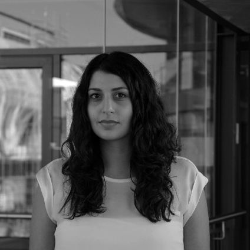

We are situated at the MPI CBS, Leipzig and INM-7, FZ Jülich and have strong ties with the MICA-MNI, Montreal .
Humans have the ability to generate and experience thoughts and feelings that can be independent of instantaneous input from the environment. These integrative mental processes, such as social cognition and emotion, support adaptation to changing environmental demands, well-being, and, ultimately, survival. Integrative mental processes are likely enabled by the unique structural and functional network organization of the human brain. Indeed, contemporary accounts suggest that mammalian neural processing is organized along multiple hierarchies that define how information from nearby and distant neural populations is integrated and segregated across the cortex. These hierarchies are expressed in fundamental anatomical, topological, and genetic patterns, which vary as a function of processing complexity. The goal of the Otto Hahn group is to study how (phylo)genetic and environmental factors and shape brain structure and function and consequently behavior. We are particularly interested in studying the neurogenetic basis of integrative cognitive and affective processes, such as social cognition, as these functions are especially developed humans and have great environmental relevance.
Large-scale brain organization 🌈
Recent advances in system neuroscience have enabled the study of connectome organization through unsupervised manifold learning techniques, which project whole-brain data into a lower dimensional space governed by connectivity. In healthy individuals, these techniques have gained significant traction to study large-scale principles of functional and microstructural neuroimaging data. Here we study such organizational axis, to further uncover the innate architecture of the brain.
 Relation between dual origin and large-scale organization of structural covariance in humans and macaques.
For details, see e.g. Valk et al. (Science Advances)
Relation between dual origin and large-scale organization of structural covariance in humans and macaques.
For details, see e.g. Valk et al. (Science Advances)
Evolution and development 🤖
To understand what factors shape the organization of the human brain we study its evolution and development using both human and non-human primate data. Here we compare patterns of large-scale organization across species and developmental time-windows. In addition, we investigate imbalances in structure and functional organization in neurodevelopmental disorders, in particular by studying individuals with autism spectrum disorder in cooperation with the mica lab in Montreal.
 Local stability of cortical thickness measurements.
For details, see e.g. Kharabian Masouleh et al. Cerebral Cortex (2020)
Local stability of cortical thickness measurements.
For details, see e.g. Kharabian Masouleh et al. Cerebral Cortex (2020)
Behavior-brain-body interactions
This theme evaluated the relationship between brain and behavior. On the one hand we study how effects of health-related (bodily) measures shape brain structure and function and what underlies these effects (neuronal vs. non-neuronal contributions). On the other hand, we study the association between mind and brain, such as the relationship between personality and brain structure and function, as well as the interrelation between mind, brain and body.
 Association between personality and local brain structure.
For details, see e.g. Valk et al. (NeuroImage)
Association between personality and local brain structure.
For details, see e.g. Valk et al. (NeuroImage)


Connect with our friends and collaborators:
Boris Bernhardt and team, MICA, MNI Jonny Smallwood, Queens University, CA Daniel Margulies, Institut de Cerveau et de la Moelle épinière, Paris, France Thomas Yeo, National University of SingaporeConnect with our institutes:
Max Planck Institute for Human Cognitive and Brain Sciences INM-7 FZ JülichTeam
In general, we are always looking for talented and enthusiastic people to join our lab! If you are interested in joining, please email us your CV and a cover letter

|
Sofie Valk, PhD Otto Hahn Research Group Leader at MPI CBS and INM-7 FZ Jülich Cognitive neuroscience | Heritability | Plasticity email |
 |
Lina Schaare Postdoctoral Researcher Mind-brain-body-genetics interactions| Multimodal neuroimaging | Big data email |

|
Seyma Bayrak Researcher & Medical Student Gradients | Plasticity | Structure-Function email |
||

|
Bin Wan PhD researcher Asymmetry | Structure-Function | ASD email |
||
|
Neville Magielse MSc intern phylogeny | cerebellum | open science email |
|||

|
Meike Hettwer PhD rotation student - School of Cognition disorder | connectome | genes email |